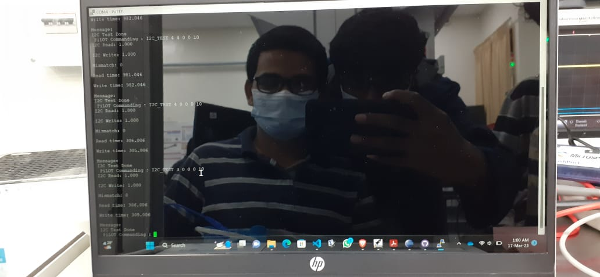
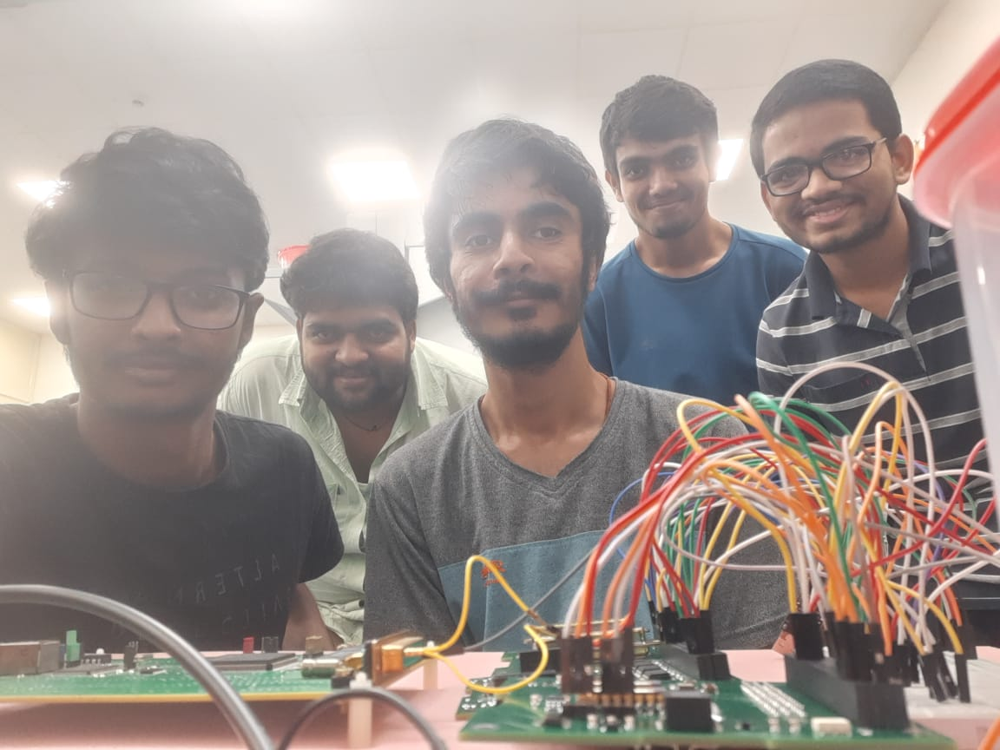

Along with the ground station operations in fifth semester, I also focused on developing and configuring some open source softwares to process the telemetry data received through beacons. After configuring the softwares to decode the telemetry packets and telecommand to INSPIRESat-1, I also developed a GUI using which we can automate the process of configuring that open source software. So by now I had some skills to developed ground station softwares and de-packetize the raw telemetry packets sent using CCSDS format. All this activites were done along with the academics. This would be my first semester where in I have focused equally on buildling other skills while progressing through the academic studies. Fifth semester was over and I was back at my home for a winter vacation. It was only a month of break after which our sixth semester followed by internship was about to commence. During vacation time our result was out and I scored a GPA of 9.03 which was very much satisfactory for me. Now I had that confidence to manage my academics along with the SSPACE and ground station activities. One day after results, on 27th December 2022 I got a call from our senior who was asking me to contribute to the mission called PiLOT which was to be launched soon. My job was to help our seniors for writing the flight software and carrying out ground support tests for the software. Without any hesitation, I accepted his offer and was very happy. On that day I realized that if I am sincere to my work, other people will believe and trust me and ultimately include me in such great missions. Missions which are soon to be launched are not very easy to handle. The biggest difficult is to deal with the timing constraint. My seniors were confident, that no matter what happens I would complete the work within the stipulated time. The next semester was my sixth semester of academics. I had no clue how hard or how easy it could be. But still I decided to completely focus on the PiLOT mission. This was the only semester in which I was slightly relaxed with the academics.
Me along with my senior started discussing about the codes for the software. The drivers for many of the sensors present on various boards were already completed by my senior. So the major part which was remaining was to interface our payload to POEM stage modules which will capture the data generated by our payload and then transmit it back to ISRO ground stations. Along with interfacing with the POEM packages we also had to design the software architecture. This all was taken care by my senior and with him I used to disucss some possible failure scenarios and discuss the architecture and several other methods to meet the challenges. Designing the packet structure and packetizing the raw data into it was completed. After this was done, I started configuring the ground support software using which we will test the software and check whether the values which we are receiving are correct or not. When the flight boards were available all the boards were connected separately and tested. We usually call this test setup as FlatSat wherein all the boards are layed on flat surface and connected with each other using jumpers. All the night we spent testing the hardware and software over it. After making it work finally, we took some pictures which clearly showed the satisfaction of the work on our faces.


All the prilimanary testings were done. There was very less time and many good architectures of the software and its sub-module could have been implemented. But due to lack of time we stick to the easiest and simple to implement approach. Doing this there were few problem which we faced later during testing the data integrity with the Flight Module POEM packages. As I was with the team throughout the mission, I was able to note down all the problems and difficulties faced during this mission. This indeed help me, because many of the problems which we faced during PiLOT-1 mission was rectified during PiLOT-G2/ GRACE mission which will be discussed later. Most of the flight boards were fabricated and we were told to do a Data integrity test with the POEM packages systems. This was the first time I was visiting VSSC Centre of ISRO. The testing went well and we took a huge breath of relief. Although we could not get the data which we generated during that testing but we were sure that our data is not interrupting any other payload channel's data.
Working under a mission not only involves taking care of one subsystem but also helping and checking other subsystems works. Structure of the PiLOT payload was of the size of 1U (10cm x 10cm x 10cm). All the PCB's (Printed Circuit Boards) were also designed to be in the same form factor. When a dummy structure was available, we performed a dummy integration with the boards. Flight structure was to be 3-D printed by LnT. Once the flight structure was delivered by LnT we visited ELIX centre at LPSC for the mechanical integration of our payload. During that phase our Quiz 2 exams were going on. It was my RFIC exam on the next day and I was with my PiLOT team for the mechanical integration of our payload. Even PD sir captured my picture while studying for quizzes during mechanical integration. But he never forced me to focus on the work and leave the exam. After completing the integration at that night I finally moved to my hostel room. It was about 11:30pm in the night. I was fully exhausted on that day so I decided to take rest and study in the morning for the exam. On the next day after waking up at 5am in the morning I again started revising the syllabus and prepared well for the exam. Still I was little messed up with my preparations because I never had this habit of preparing for the exams a day before the exam. The exam went well and after the results came my score was above 80%. I was satisfied and was also a bit of nervous. I was nervous because I knew I could have done much better than what I have been doing since my starting of the sixth semester.

After the mechanical integration the payload was moved to QDTE lab at VSSC. It was a weekend and due to elective courses during sixth semester, I did not had exam for atleast next six days. All the pre-flight testings on the payload was carried out to qualify our payload for launch on PSLV-C55 rocket. After my classes were finished, I moved on to VSSC to take part in all the QDTE testings and get more experience from all my teammates as well as the staff of VSSC who were guiding us for doing all the testings on our payload. Those five to six days were of complete new experience for me. I got to interact with many ISRO scientists and work with them to test our payload. I also got a chance to visit all the testing facilites at VSSC and test our payload using that facility. The testings used to take lot of time so we divided our team into two groups and were working day and night to qualify our payload. PD sir also used to stay with us at VSSC guest house. Everyday for dinner he used to give us some treat in whichever restraunt we want. We all also enjoyed the lunch and high tea's at VRC mess at VSSC and VSSC hill top restraunt. During the free time we also roam around the beaches and churches around the VSSC guest house.


Once the QDTE testings were over the payload was immediately shifted to SDSC (Satish Dhawan Space Centre), SHAR. Electrical and Mechanical team from our seniors lead the payload to its launch destiantion at the spaceport of India. All the electrical checks were completed and the payload was taken to the fourth stage of PSLV-C55 rocket. All the electrical testings were carried with the flight hardware on the POEM platform. It was first experience for most of us to watch the rocket and all its stages in front of our eyes. After the first team returned back, the second team including me went for the mechanical integration checks at SHAR. It was my first time to watch the rocket so closely and even touch it. Before moving in to the MST tower we were given instructions about how to escape the building in case of fuel leakage or any emergency situation. We were taken to the fourth stage of the rocket where the satellites were intergrated with the fourth stage of the rocket. It was a clean room and so we were instructed to wear the required constume to get into that clean room. Once we were into that room, I took a closer look at each and every systems which are used to intergrate the satellite with the rocket stage. Once PD sir told that, there are very few people in ISRO who actually gets chance to see all this things which we were observing even without being a ISRO scientist. That moment was a million times prestigious moment for me!!!!
.jpg)
.png)
.jpg)
All the hard work, many sleepless nights, 100% dedication was taking flight on 22rd April 2023. Yes it was a launch day, and me with my seniors organised a small launch party at SSPACE lab. I still remember that I buncked Digital Communications extra class to feel the excitement to watch the rocket and our payload launch into the space. All the goosebumps, excitement and thrill during the launch made the experience fantastic. After few orbits we started getting data. All the systems were working nominally and now were qualified as space grade equipments. The software which our team designed worked properly except few deviations which were known during the testing phase itself. The data analysis of the science part was carried out after a processed data was released from the software team. I learnt a lot during this mission and decided to overcome many challenges which we faced while designing and testing the software for it. I was also able to mitigate some major challenges which we later used in our future payload mission which will be discussed in the next project section. If you have sticked with the article and have came till here, I just want to share one thing with you all. When you are working on a mission along with a team, do try to give your best no matter if other team members supports you or not, no matter if you will get good outputs from this mission or not. Just give your 100% and feel the satisfaction of working to your atmost strength to make the mission successful.